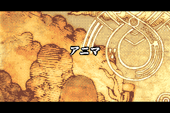

Monster Summoner (Japan)
SRAM 256K
Cartridge Identity
- Game Code
A3NJ(FamilyA3N)- Header Title
M.SUMMONER- Maker / Revision
H3/ rev0- ROM Size
- 8.0 MiB (8,388,608 B)
- Save Media
SRAM 256K- SHA-256
59ad8569f3a2e3feedd406c29936c4f58f5a4ffd0ee4e1a46fb042cd03402015
Screenshots


Hardware MMIO Subsystems
ppu_display0x802abd0,0x8044c50,0x807e474,0x807ea38,0x807f258,0x807ff08save_bus_sram_flash0x8042d58